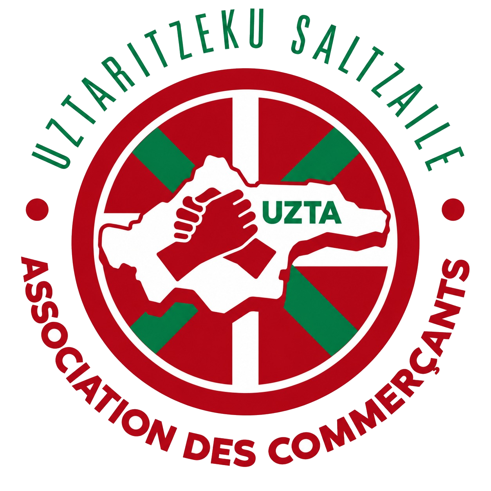

Accueil
À propos
Blog
Blog
Comment adhérer à UZTA, l'association des commerçants et artisans d'Ustaritz ?
Lire l’article
Qui peut devenir membre d'UZTA, l'association des professionnels d'Ustaritz ?
Lire l’article
À quoi sert UZTA, l'association des commerçants et artisans d'Ustaritz ?
Lire l’article
Comment trouver un commerçant ou un artisan à Ustaritz ?
Lire l’article
Quels événements et animations propose UZTA à Ustaritz ?
Lire l’article
Pourquoi acheter local à Ustaritz et soutenir les commerces de proximité ?
Lire l’article
↑